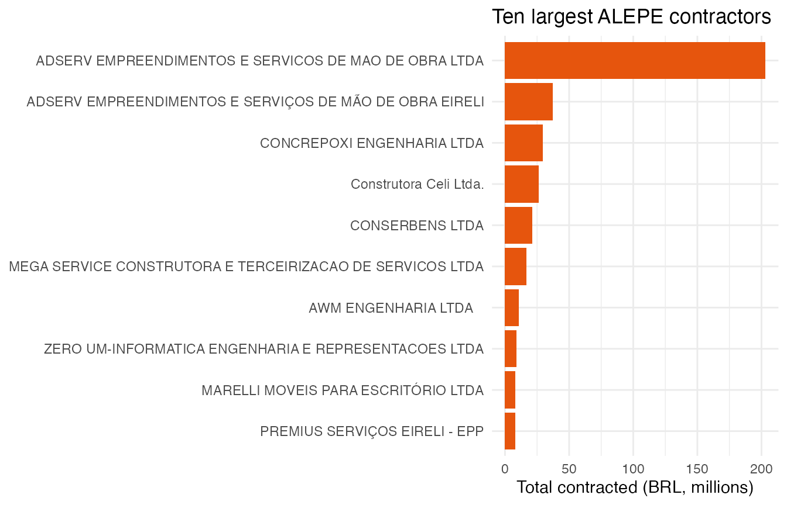
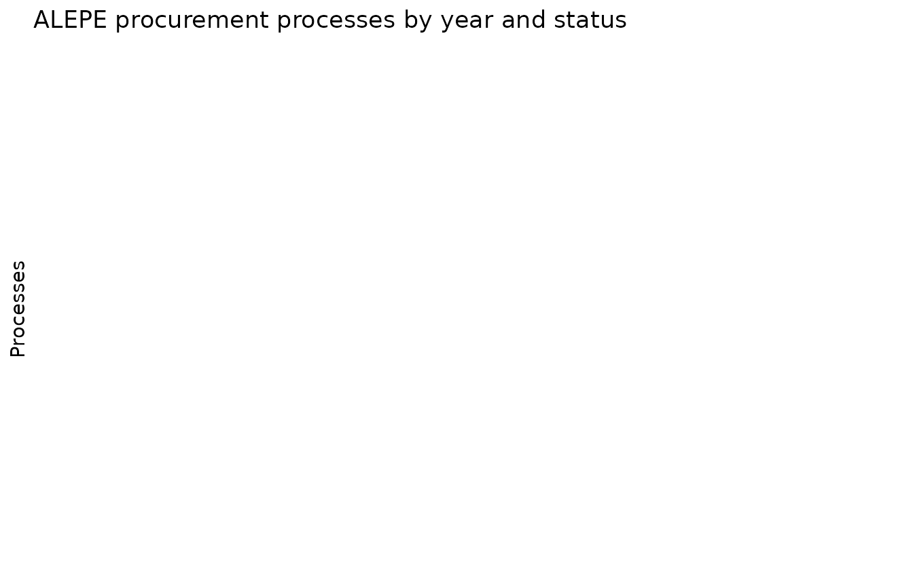

Following the money: contracts and procurement
Source:vignettes/following-the-money.Rmd
following-the-money.RmdPublic procurement data is where open legislative data meets social accountability. This vignette explores the Assembly’s contracts and bidding processes.
Contract values by modality
contracts <- alepe_contracts()
#> Warning in alepe_contracts(): ! The ALEPE open data API could not be reached.
#> ℹ Returning `NULL`. Original error: Failed to perform HTTP request. Caused by
#> error in `curl::curl_fetch_memory()`: ! Timeout was reached
#> [dadosabertos.alepe.pe.gov.br]: Connection timed out after 30002 milliseconds
#> ℹ The service may be temporarily down; try again later.
contracts |>
summarise(
n = n(),
total_brl = sum(valor, na.rm = TRUE),
.by = modalidade
) |>
arrange(desc(total_brl))
#> # A tibble: 0 × 3
#> # ℹ 3 variables: modalidade <chr>, n <int>, total_brl <dbl>Largest contractors
contracts |>
summarise(total_brl = sum(valor, na.rm = TRUE), .by = contratada) |>
slice_max(total_brl, n = 10) |>
ggplot(aes(x = reorder(contratada, total_brl), y = total_brl / 1e6)) +
geom_col(fill = "#e6550d") +
coord_flip() +
labs(
x = NULL, y = "Total contracted (BRL, millions)",
title = "Ten largest ALEPE contractors"
) +
theme_minimal()
Contracts active today
Validity dates are parsed to Date, so filtering active
contracts is a one-liner:
Procurement outcomes
procurements <- alepe_procurements()
#> Warning in alepe_procurements(): ! The ALEPE open data API could not be reached.
#> ℹ Returning `NULL`. Original error: Failed to perform HTTP request. Caused by
#> error in `curl::curl_fetch_memory()`: ! Timeout was reached
#> [dadosabertos.alepe.pe.gov.br]: Connection timed out after 30002 milliseconds
#> ℹ The service may be temporarily down; try again later.
procurements |>
count(ano, status) |>
ggplot(aes(x = ano, y = n, fill = status)) +
geom_col() +
labs(
x = NULL, y = "Processes",
fill = NULL,
title = "ALEPE procurement processes by year and status"
) +
theme_minimal() +
theme(legend.position = "bottom") +
guides(fill = guide_legend(ncol = 1))